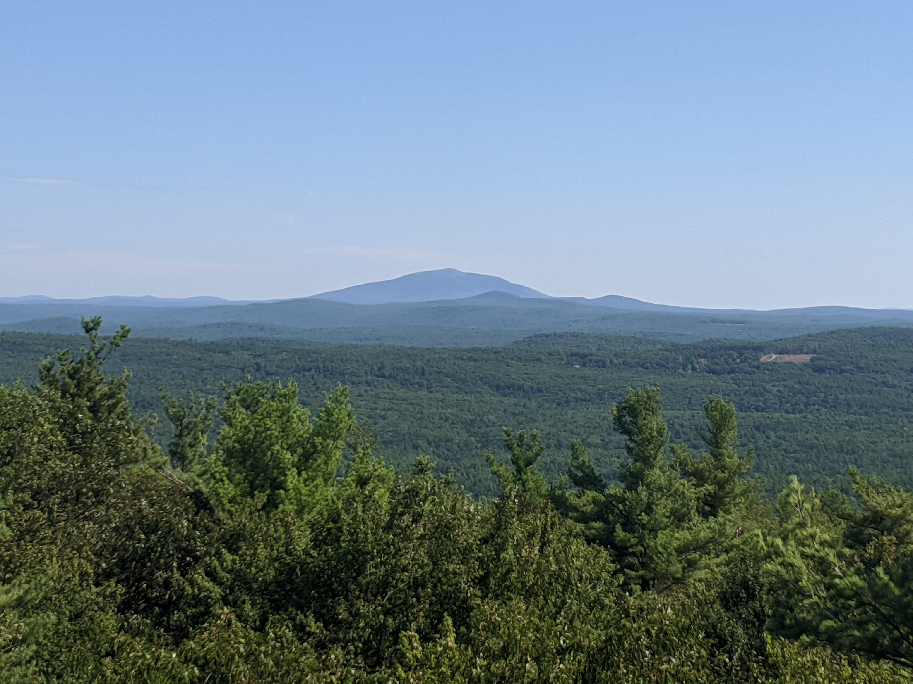
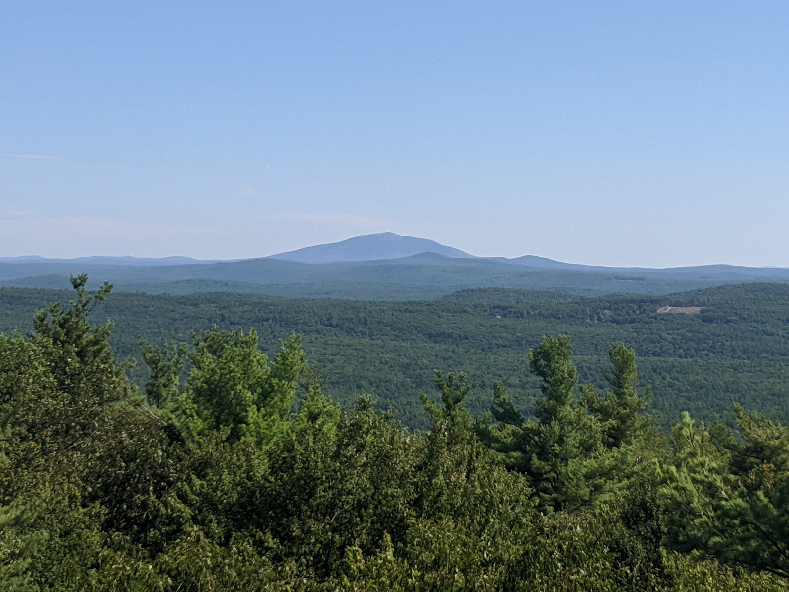
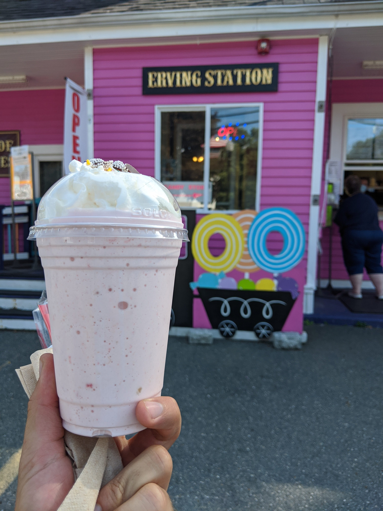
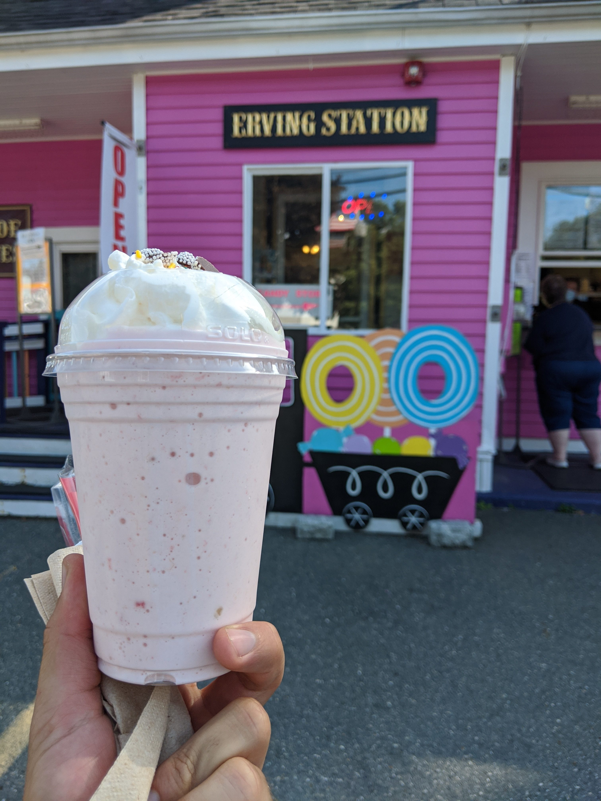

Distance
Distance Elevation
Elevation Observed Wildlife
Observed Wildlifeto
This backpack along the New England Scenic trail highlighted by the clear views of a sunset a half mile from camp and a sunrise from your tent on Stratton Mountain. Another view from the fire tower atop Mount Grace offers terrific views and some terrific wildlife resides at Hidden Pond.


I realized I had a Thursday afternoon and Friday free and decided to do this hike on a bit of a whim when. I chose this specific hike since the campsite was only 3 miles from the trailhead which is only a 100 minute drive from Boston. After doing some work in the morning I got to the trailhead around 2:30. Before beginning the hike I got some hand-made dark chocolate from Erving Station that ended up being so delicious.


From the trailhead I started heading down some switchbacks that followed a classic New England rock wall. It was immediately apparent how well the trail is marked. Fresh white blazes were frequently visible in addition to hand painted maps detailing some areas of trail. Although the trail markings initially seemed extreme, it was useful due to the lack of undergrowth and lack of a clearly visible path.
After the initial mile descent I came upon a bog named Hidden Pond and a small clearing with a flat boulder to take a seat upon. This was the only scenic area before I reached my camping area and I decided to make the most of it. I walked out on a fallen tree that brought me to the edge of the bog and enjoyed a panoramic view. I noticed a mammal partly emerging from the shallow water. Then I spotted it moving on a tiny island. After focusing my monocular I was able to make out a river otter and enjoyed watching it sprawl out in the sun. The stop ended up being a peaceful one and I was already looking forward to stopping again on my return journey.

I had to work over the next two miles to reach the top of Stratton Mountain and the Richardson-Zlogar Cabin. When I reached my resting place for the night I was excited at the large east facing clearing and the prospect of a clear night and morning. I set up my tent on a well made wooden platform at the edge of the clearing after deciding to pass up one set back a bit further. A large group of about 8 was also set up for the night and I was later joined by another couple. I brought some snacks and a book to find privacy a half mile away at the west facing view and set up my hammock. The clearing was made to accommodate a long stretch of power lines, but the view outweighed the annoyance of the intrusion of civilization. The clear evening offered an amazing sunset and I was able to enjoy it from a few large rocks that were erected precisely to take it all in.

I awoke after lots of star gazing ready for dawn and the emergence of the sun directly over Mount Gracie. There were a few sets of trees from which to hammock and I let the rays reach my resting body while sipping my warm morning tea.

I got started on the day’s hike just before 8AM and geared up with my barefoot shoes and small camelback. I passed by the west facing view again and descended down Stratton Mountain past a clearing for the same power lines. Then the trail very gently rolled up and down over the three miles that separate the bases of the two mountains. I encountered my only source of water about a half mile before the only road crossing. Being so late in summer, the brook flowed slowly and my filter struggled to manage the undesirable water.


I crossed Northfield Road and made the ascent to Little Mount Grace. I passed a trail volunteer carrying a chainsaw to clear a downed tree. Also a family was starting to pack up after spending the night on the little peak. I continued through the pretty woods. Then a few power lines followed the trail for a small section before I started the steep final ascent to Mount Grace. I immediately climbed the fire tower since the clearing offered no views. As expected the door to the fire tower was locked, but I was able to relax on a part of the stairs and take in the 360 degree view including Mount Monadnock and Stratton Mountain.
 

I returned the way I came, save a slight mixup around a section with many trails. I then followed the power lines to shorten my hike a bit. I returned to my pack, saddled up the heavier weight and got myself going for the final leg. My only stop from there was at Hidden Pond which delighted me with a sighting of TWO river otters! I again studied them with my monocular as they swam around each other, occasionally poking their heads out. From there the trail returned up the mile long hill through some classic Western Massachusetts woods and reached my car at 3:30. I again stopped at Erving Station and sucked down the strawberry banana milkshake I had been thinking about since Mount Gracie.
 
